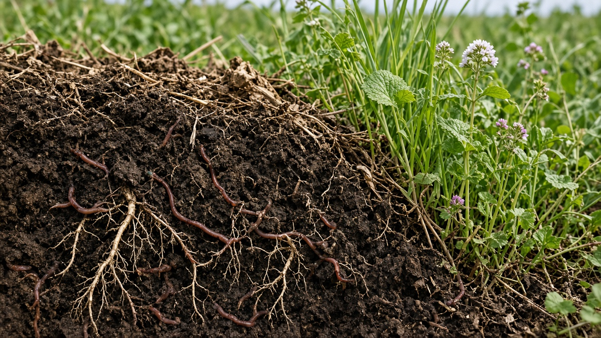
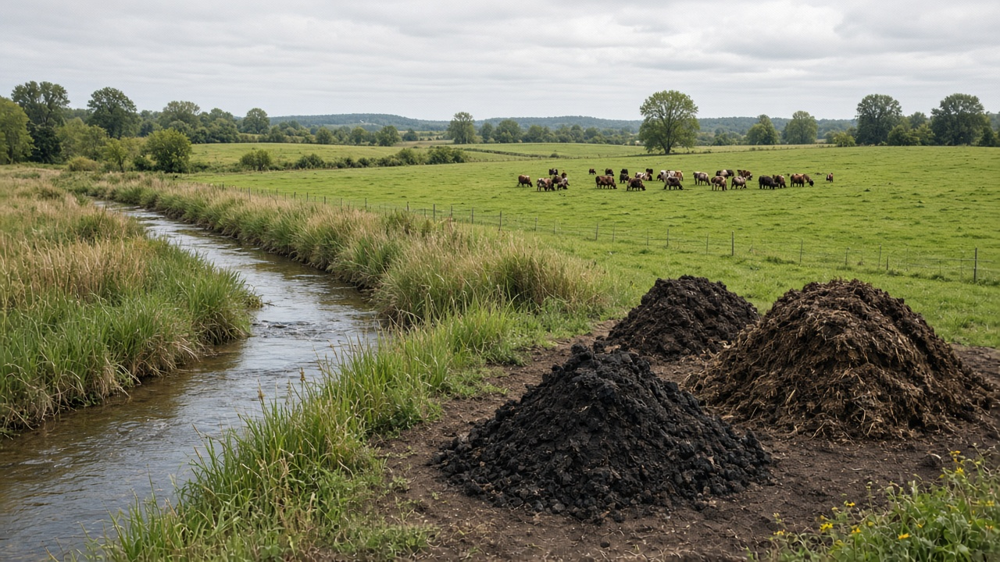
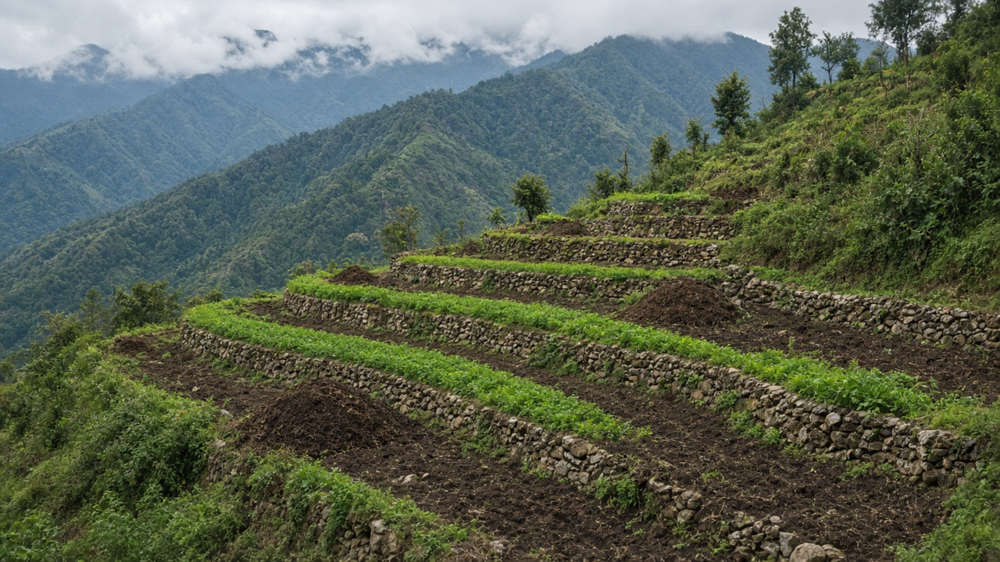

Regenerative Agriculture and Soil Health
Published on August 20, 2026

Regenerative agriculture goes beyond sustainability by actively restoring degraded farmland, rebuilding organic matter, and enhancing the biological vitality of soil ecosystems. Healthy soil acts as a living sponge that stores carbon, filters water, and supplies crops with balanced nutrients released through microbial activity. Practices such as no-till farming, diverse cover crops, and managed grazing minimize soil disturbance and protect the fragile fungal networks that bind particles together. Farmers who prioritize soil health often report higher resilience during droughts and floods because well-structured soil absorbs rainfall efficiently and retains moisture for longer periods.
Measuring soil health involves tracking indicators like organic carbon content, aggregate stability, earthworm populations, and microbial diversity rather than relying solely on crop yield figures. Compost, biochar, and crop residue retention return carbon and nutrients to the ground, supporting a continuous cycle of growth and decomposition on the farm. Livestock integration through rotational grazing distributes manure evenly and stimulates plant regrowth, mimicking natural grassland dynamics. Reducing synthetic inputs lowers input costs while decreasing chemical runoff that pollutes rivers and groundwater supplies downstream from agricultural landscapes.
Policy incentives, carbon credit markets, and supply-chain commitments are increasingly rewarding farmers who document verified soil improvements. Extension agents teach practical techniques for building berms, installing contour lines, and establishing perennial buffers along waterways to prevent erosion. Consumers and food companies recognize regenerative labels as evidence of climate-smart production that sequesters atmospheric CO2 in stable soil fractions. By treating soil as a foundational asset rather than inert dirt, regenerative agriculture offers a pathway toward food security, rural livelihoods, and planetary health for generations to come. Research partnerships between universities and farming communities accelerate the adoption of proven soil-restoration practices worldwide.

पुन: जीवित कृषिले दिगोपनकारिताभन्दा अगाडि बढेर क्षतिग्रस्त खेत पुनर्स्थापना, जैविक पदार्थ पुन: निर्माण र माटो पारिस्थितिकीको जैविक जीवनशक्ति बढाउँछ। स्वस्थ माटो कार्बन भण्डारण, पानी छान्ने र सूक्ष्मजीवी क्रियाद्वारा सन्तुलित पोषक तत्व उपलब्ध गराउने जीवित स्पन्जजस्तो काम गर्छ। जुतो नगर्ने खेती, विविध कभर क्रप र व्यवस्थित चरणबद्ध चरन जस्ता अभ्यासले माटोको अनावश्यक क्षति घटाउँछ र कणहरू जोड्ने नाजुक कवक सञ्जाल संरक्षण गर्छ। माटो स्वास्थ्यलाई प्राथमिकता दिने किसानहरूले राम्रो संरचित माटोले वर्षा प्रभावकारी रूपमा सोस्छ र लामो समयसम्म नम राख्छ भनेर खडेरी र बाढीमा उच्च लचिलोपन देख्ने गर्छन्।
माटो स्वास्थ्य मापनमा जैविक कार्बन, कण स्थिरता, केंचुवा जनसंख्या र सूक्ष्मजीवी विविधता जस्ता सूचक ट्र्याक गर्ने, बाली उत्पादन मात्रमा भर नपर्ने हो। कम्पोस्ट, बायोचार र बाली अवशेष फिर्ताले कार्बन र पोषक तत्व जमिनमा फर्काउँछ, खेतमा वृद्धि र विघटनको निरन्तर पुन: चक्रण समर्थन गर्छ। चरणबद्ध चरन मार्फत पशु एकीकरणले गोबर समान रूपमा वितरण गर्छ र प्राकृतिक घाँस मैदानको गतिशीलताको अनुकरण गर्दै बिरुवा पुन: उमार्छ। सिंथेटिक सामग्री घटाउँदा लागत र रासायनिक बहिर्वाह घट्छ जुन नदी र भुँगर्भ पानी प्रदूषित गर्छ।
नीति प्रोत्साहन, कार्बन क्रेडिट बजार र आपूर्ति श्रृंखला प्रतिबद्धताले प्रमाणित माटो सुधार देखाउने किसानलाई बढ्दो पुरस्कार दिँदैछ। विस्तार एजेन्टहरूले कटान रोक्न बाँध, समोच्च रेखा र जलमार्ग किनारमा बहुवर्षीय संरक्षण क्षेत्र स्थापना गर्ने व्यावहारिक तकनीक सिकाउँछन्। उपभोक्ता र खाद्य कम्पनीले पुन: जीवित लेबललाई वातावरणीय CO2 माटोमा स्थिर अंशमा भण्डारण गर्ने जलवायु-स्मार्ट उत्पादनको प्रमाण मान्छन्। माटोलाई निष्क्रिय माटो होइन आधारभूत सम्पत्ति मानेर, पुन: जीवित कृषिले खाद्य सुरक्षा, ग्रामीण जीविका र पुस्तौंका लागि ग्रहीय स्वास्थ्यको मार्ग प्रस्ताव गर्छ।

पुन: जीवित कृषि स्थिरता से आगे बढ़कर क्षतिग्रस्त खेत की बहाली, जैविक पदार्थ का पुन: निर्माण और मिट्टी पारिस्थितिकी की जैविक जीवनशक्ति बढ़ाती है। स्वस्थ मिट्टी कार्बन भंडारण, जल छानने और सूक्ष्मजीवी गतिविधि से संतुलित पोषक तत्व उपलब्ध कराने वाले जीवित स्पंज की तरह काम करती है। जुताई न करने वाली खेती, विविध कवर फसल और प्रबंधित चरणबद्ध चरन जैसे अभ्यास मिट्टी की अनावश्यक क्षति को कम करते और कणों को जोड़ने वाले नाजुक कवक सञ्जाल की रक्षा करते हैं। मिट्टी स्वास्थ्य को प्राथमिकता देने वाले किसान अक्सर सूखे और बाढ़ में अधिक लचीलापन देखते हैं क्योंकि अच्छी संरचना वाली मिट्टी वर्षा को प्रभावी ढंग से सोखती और नमी लंबे समय तक रखती है।
मिट्टी स्वास्थ्य मापन में जैविक कार्बन, कण स्थिरता, केंचुए की संख्या और सूक्ष्मजीवी विविधता जैसे संकेतक ट्रैक करना शामिल है, न कि केवल फसल उपज पर निर्भर रहना। खाद, बायोचार और फसल अवशेष वापसी कार्बन और पोषक तत्व जमीन में लौटाते हैं, खेत में वृद्धि और विघटन का निरंतर पुन: चक्रण समर्थन करते हैं। चरणबद्ध चरन के माध्यम से पशु एकीकरण गोबर समान रूप से वितरित करता है और प्राकृतिक घास मैदान की गतिशीलता की नकल करते हुए पौधों को पुन: उगाता है। सिंथेटिक सामग्री कम करने से लागत और रासायनिक बहिर्वाह घटता है जो नदी और भूजल को प्रदूषित करता है।
नीति प्रोत्साहन, कार्बन क्रेडिट बाज़ार और आपूर्ति श्रृंखला प्रतिबद्धताएँ प्रमाणित मिट्टी सुधार दर्शाने वाले किसानों को बढ़ता पुरस्कार दे रही हैं। विस्तार एजेंट कटाव रोकने के लिए बाँध, समोच्च रेखाएँ और जलमार्ग किनारे बहुवर्षीय संरक्षण क्षेत्र स्थापित करने की व्यावहारिक तकनीक सिखाते हैं। उपभोक्ता और खाद्य कंपनियाँ पुन: जीवित लेबल को वातावरणीय CO2 को स्थिर मिट्टी अंशों में भंडारण करने वाले जलवायु-स्मार्ट उत्पादन के प्रमाण के रूप में मानती हैं। मिट्टी को निष्क्रिय मिट्टी नहीं बल्कि मूलभूत संपत्ति मानकर, पुन: जीवित कृषि खाद्य सुरक्षा, ग्रामीण आजीविका और आने वाली पीढ़ियों के लिए ग्रहीय स्वास्थ्य का मार्ग प्रस्तुत करती है।